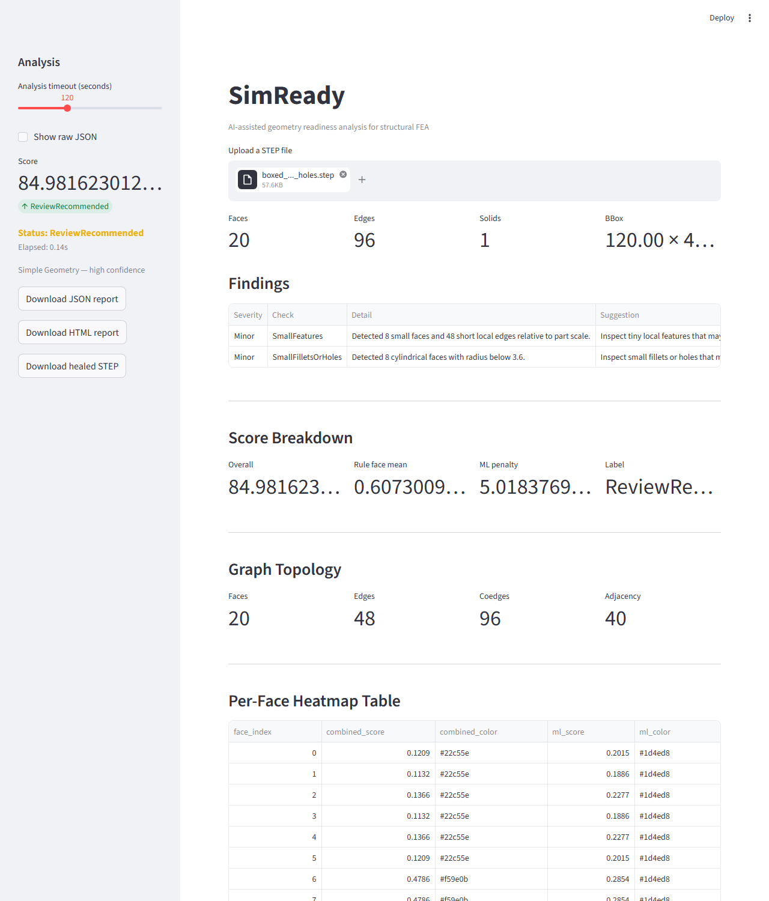
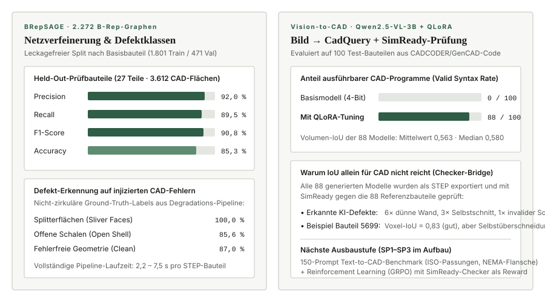

- Fallstudie
- Eigenes Projekt, GitHub
- Zeitraum
- seit 03/2026
SimReady: KI-Copilot für FEA-Vorverarbeitung und CAD-Generierung
Vor jeder Finite-Elemente-Rechnung steht die Vorverarbeitung: Geometrie prüfen, das CAD-Modell reparieren und entscheiden, wo das Netz feiner sein muss. Pro Bauteil kostet das erfahrene Berechnungsingenieure oft mehrere Stunden. Was dabei übersehen wird, führt später im Solver zu Abbrüchen oder ungenauen Spannungen.
1. Zwölf B-Rep-Geometrieprüfungen und automatische Heilung
SimReady liest eine STEP-Datei über pythonocc (OpenCascade) ein, repariert Topologiefehler über ShapeFix und führt zwölf Geometrieprüfungen aus. Geprüft werden unter anderem offene Schalen, Selbstüberschneidungen, Splitterflächen (Sliver Faces), sehr kurze Kanten, dünne Wände sowie kleine Bohrungen und Verrundungen. Das Ergebnis ist ein klarer Vernetzbarkeits-Score von 0 bis 100, eine geheilte STEP-Datei und eine farbliche Markierung direkt an den betroffenen Flächen des 3D-Modells.

2. Graph Neural Network auf dem B-Rep-Flächengraphen (BRepSAGE)
Regeln allein betrachten jede Fläche isoliert. Ein Berechnungsingenieur bewertet eine Fläche aber immer zusammen mit ihren Nachbarflächen. Deshalb übersetzt SimReady die B-Rep-Topologie in einen Flächen-Nachbarschaftsgraphen mit zwölf geometrischen Merkmalen pro Fläche (Flächentyp, Größe, Normalenvektor, mittlere Krümmung und UV-Ausdehnung).
Darauf arbeitet BRepSAGE, ein zweischichtiges GraphSAGE-Netz mit drei Ausgabeköpfen: Es sagt für jede einzelne Fläche den Verfeinerungsbedarf und die lokale Komplexität voraus und klassifiziert gleichzeitig den Fehlertyp des gesamten Bauteils. Trainiert wurde das Modell auf 2.272 selbst generierten und gezielt degradierten CAD-Bauteilen, getrennt nach Ursprungsbauteil ohne Datenleckage zwischen Training und Validierung.

91 % F1-Score (92 % Precision, 90 % Recall) auf 3.612 Flächen · 88 von 100 valide CAD-Modelle aus Bildern
3. Multi-Turn-LLM-Agent, RAG und sichere Text-zu-CAD-Generierung
Über die Analyse-Pipeline legt SimReady einen Multi-Turn-LLM-Copiloten mit vier Werkzeugen: Geometrie analysieren, gezielte Reparaturen vorschlagen, FEA-Standards über eine Vektorsuche (RAG) nachschlagen und neue Bauteile generieren. Für die Generierung führt das System keinen freien LLM-Code aus, sondern nutzt eine typsichere Pydantic-DSL (Quader, Zylinder, Vereinigung, Abzug), die direkt in valide STEP-Dateien übersetzt und sofort durch den eigenen Geometrie-Checker geprüft wird (5 von 5 Prompts fehlerfrei auf gehosteten LLMs).
4. Vision-Language-Fine-Tuning (Bild zu CadQuery) und Qualitätsprüfung
Im zweiten Projektstrang bewertet SimReady KI-generierte CAD-Modelle. Dafür habe ich Qwen2.5-VL-3B per QLoRA auf dem GenCAD-Code-Datensatz feinabgestimmt, um aus einem 2D-Bauteilbild direkt ausführbaren CadQuery-Code zu erzeugen. Auf dem 100-Teile-Testset stieg die Rate lauffähiger CAD-Programme von 0 auf 88 von 100 (Volumen-IoU im Mittel 0,563, Median 0,580).
Entscheidend für die Praxis: Jedes generierte Bauteil läuft anschließend automatisch durch den SimReady-Checker. Dabei erkennt der Checker Selbstüberschneidungen, zu dünne Wände und ungültige Solids, die eine reine Voxel-IoU-Metrik komplett übersieht (zum Beispiel ein Bauteil mit sehr gutem IoU von 0,83, das sich selbst durchdringt). Aktuell baue ich diese Brücke zu einem 150-Prompt-Text-to-CAD-Benchmark für Konstruktionsregeln (ISO-Durchgangslöcher, NEMA-Flanschbilder, Mindestwandstärken) aus, um den Geometrie-Checker als direktes Reward-Signal im Reinforcement Learning (GRPO) zu nutzen.